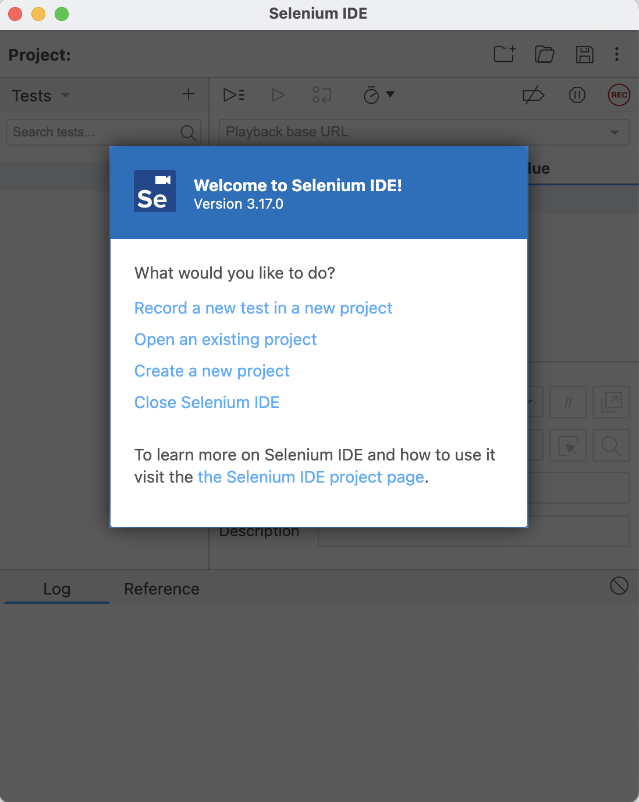
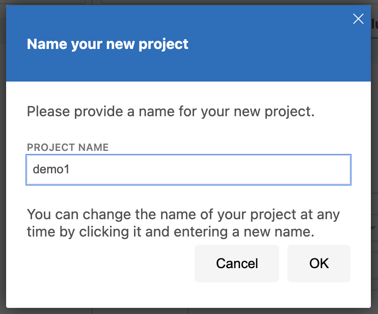
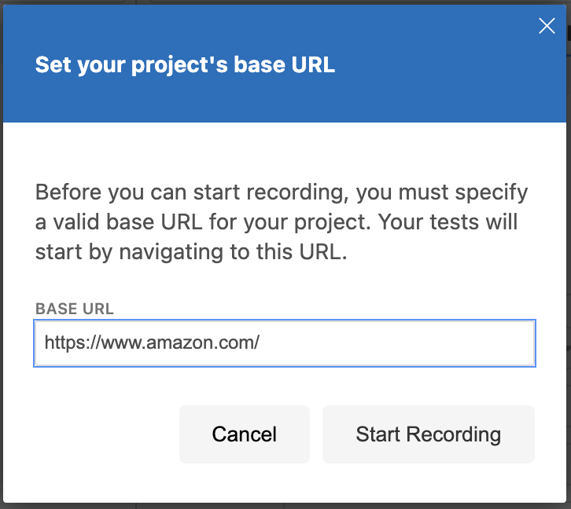
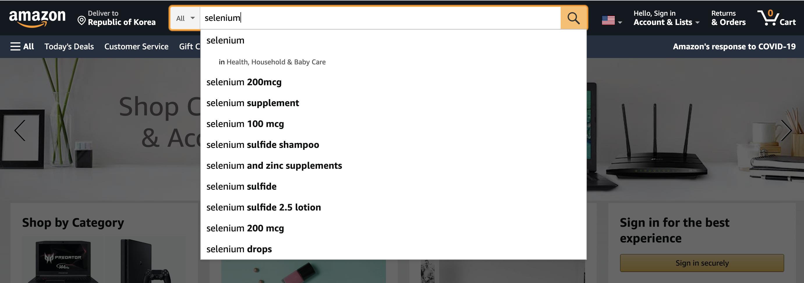
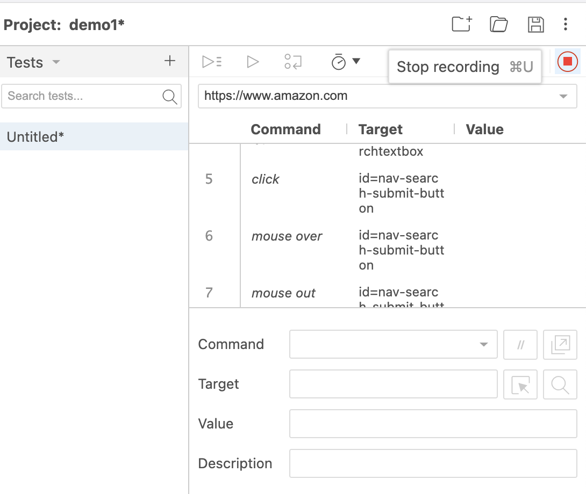
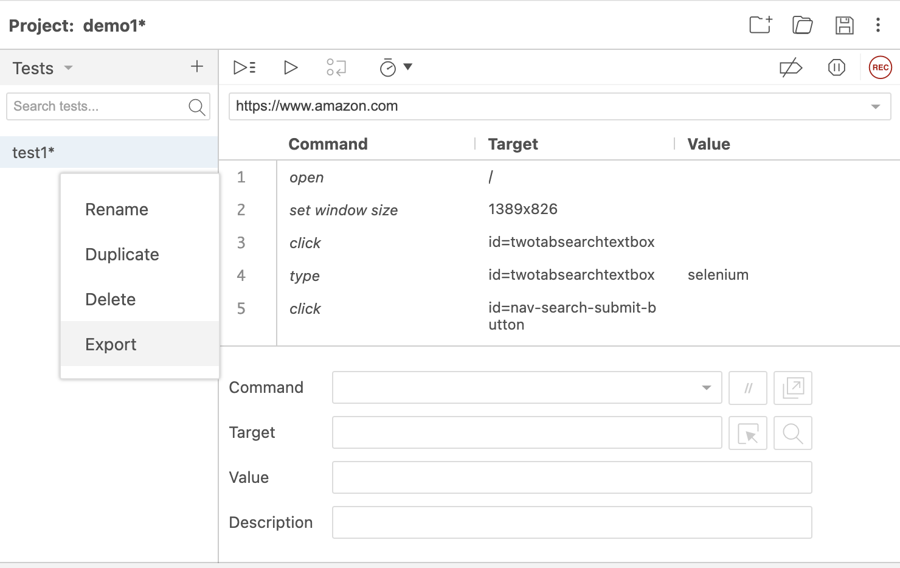
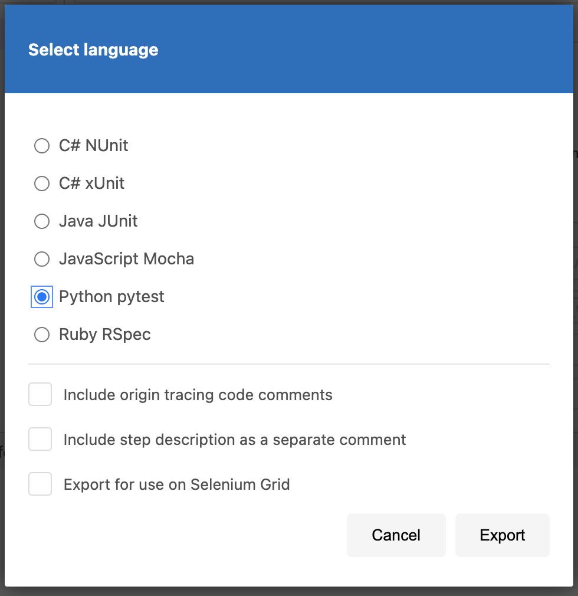
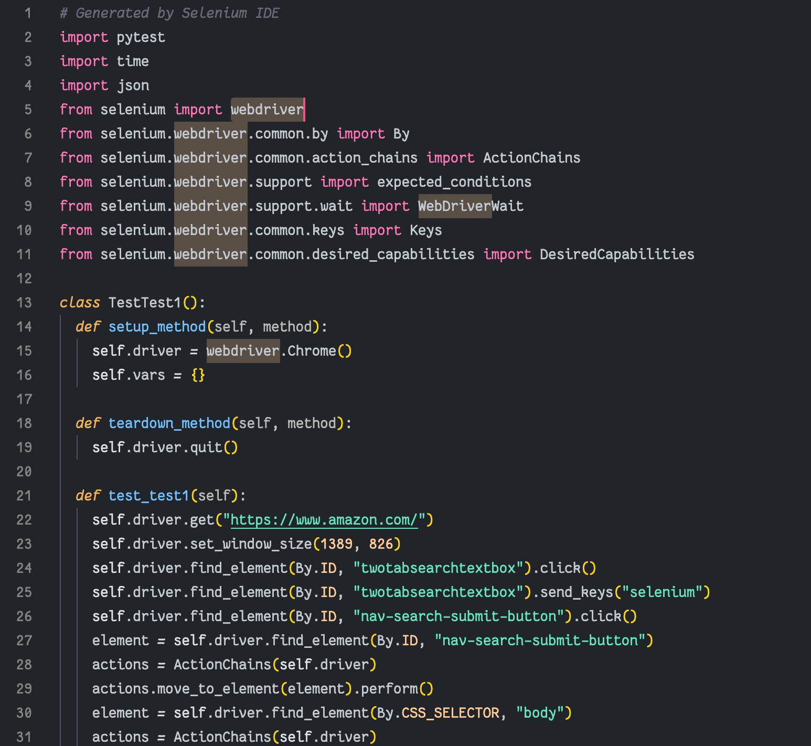
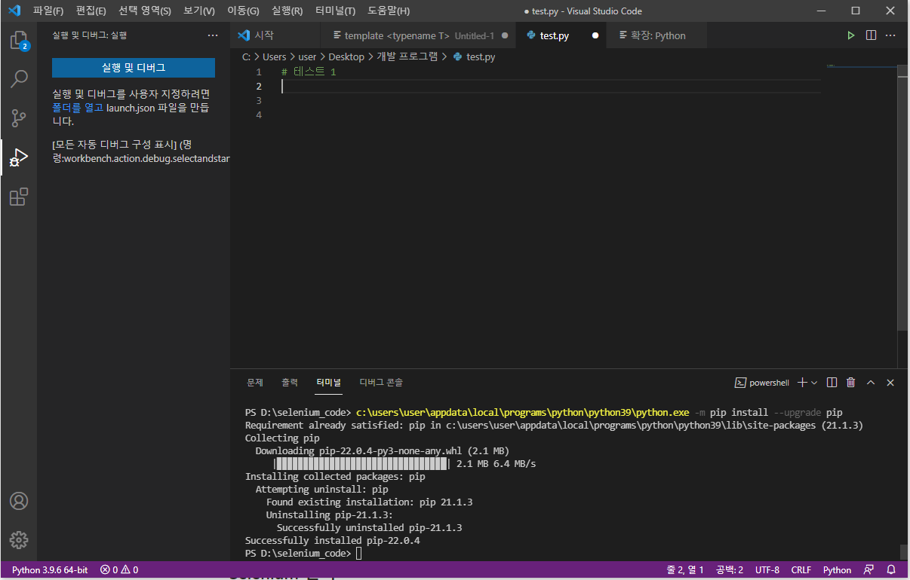
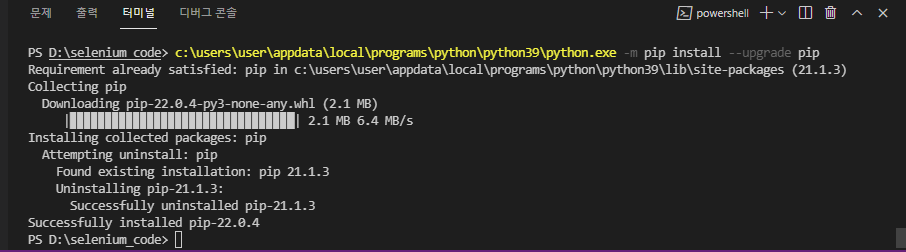

Selenium

Selenium automates browsers. That's it! ... What you do with that power is entirely up to you. - Quoted from KatalonStudio Homepage
Selenium
Selenium은 주로 웹 크롤링 도구로 잘 알려져 있지만 웹 애플리케이션을 다양한 브라우저에서 테스트하는데 사용되는 오픈 소스 자동 테스트 도구
웹 애플리케이션만을 테스트하기 때문에 다른 분야에서는 사용할 수 없는 것이 특징
Selenuim의 주요 특징
1) 파이어폭스, 크롬, 오페라, 사파리 같은 다양한 브라우저에 대해 테스트할 수 있음
2) Java, Python, Perl, PHP, Ruby와 같은 프로그래밍 언어를 통해서 테스트 환경을 만들 수 있음
3) 플랫폼에 의존하지 않기 때문에 Window, Linux 및 Macintosh에 배포를 할 수 있음
4) JUnit 및 TestNG와 같은 툴과 통합될 수 있음
5) 마지막으로 기능테스트를 주 목적으로 테스트를 수행
기능테스트?
테스트 대상 컴포넌트의 명세로부터 도출된 테스트 케이스에 기반하여 수행되는 블랙박스 테스트 기법의 일종
프로그램에 입력을 주고 그에 해당하는 출력을 조사함으로써 테스트를 수행
내부 구조에 대해서는 크게 비중을 두지 않고 작성한 프로그램이 기능적으로 잘 작동을 하는 것 즉,
해당 시스템이 어떤 것을 하는지를 테스트하는 것이 바로 기능테스트
Selenium 구성요소
1. Selenium IDE
- Selenium Test Case를 만들고 실행하기 위한 통합 개발 환경을 제공
- Chrome 및 파이어폭스 확장 플러그인으로 제공되며, Selenium Test Case를 쉽게 작성할 수 있도록 도움. 그렇기 때문에 가장 쉽게 사용자들이 접근하여 테스트를 할 수 있음
- 또한 브라우저 내의 사용자의 액션들을 저장하여 테스트 케이스 형태로 저장되며 이것들을 extends를 통하여 다양한 언어(C#, Java, Perl, PHP, Python, Ruby 등)로 변환이 가능
- 참고 : http://seleniumhq.org/projects/ide/
2. Selenium WebDriver
- 많은 브라우저에서 웹 어플리케이션을 자동적으로 테스트하는 도구. 이 도구를 이용하여 웹 페이지를 자동적으로 탐색하고 유저 폼을 사용하거나 자바스크립트를 실행하는 등의 작업을 수행할 수 있음
- Python, Ruby, PHP, Paul과 같은 다양한 프로그래밍을 지원하며 테스트 관리를 위해 테스트NG, JUnit과 같은 프레임워크와 통합할 수 있음
- 참고 : https://www.selenium.dev/documentation/webdriver/
3. Selenium GRID
- Selenium GRID를 이용해 테스트 코드를 여러대의 Selenium RC에서 동시에 실행 할 수 있음
- 테스트 수행속도를 향상시키기 위해 분산해서 처리하거나 여러가지 환경에서 테스트가 필요할 때 사용
- 서로다른 브라우저 환경에서 일관성있는 테스트가 가능
- 참고 : http://selenium-grid.seleniumhq.org/how_it_works.html
1. Selenium IDE install
1. https://chrome.google.com/webstore/detail/selenium-ide/mooikfkahbdckldjjndioackbalphokd 에서 확장프로그램으로 추가
2. Record a new test in a new project 를 클릭
3. 프로젝트 이름을 입력하고 baseurl을 입력 (baseurl : 실습할 url 입력)
 4. Start Recording을 클릭하면 자동으로 baseURL 창이 켜지며 각종 액션들을 취한 뒤 selenium IDE로 돌아오면 모든 액션이 기록됨을 확인 가능
아래는 모든 액션이 기록된 사진
일련의 과정을 script로 export 해서 자동화가 가능하다
Python으로 export 해보았을 때
.py 을 열어보면 action들이 script로 작성됨이 확인 가능하다
얻어진 코드를 통하여 스크립트를 실행하게 된다면 자동으로 액션들이 진행되는 것을 확인할 수 있다
2. Selenium Python
2.1 설치방법
Selenium 설치 & Web driver 설치
1. Visual Studio Code 에서 새 프로젝트 생성 후 test.py 파일 하나 생성
2. PowerShell 모드르 켠 후 pip install selenium 입력하여 설치
